Google Genomics API初探
Michael Nostalgie
LightUp Biotech Co., Ltd.
June 2, 2017
Google Genomics API… Wait! Genomics?!
From human body to DNA
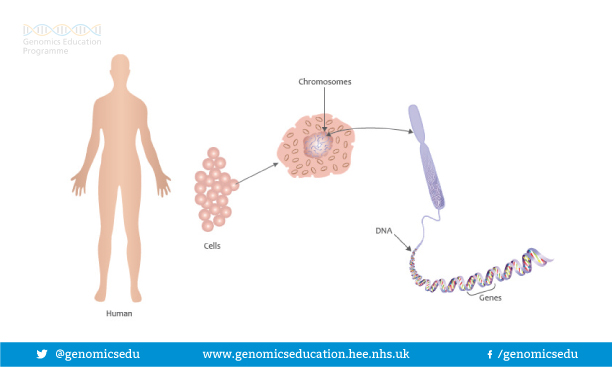
Analogy between biology and computer science
From PyCon 2017
Human Genome Project
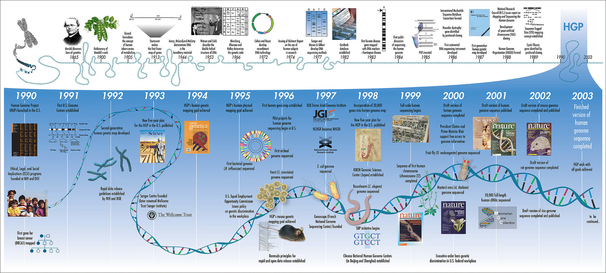
13 years, $3-billion!
Genetic variation

How does genetic variation affect us?
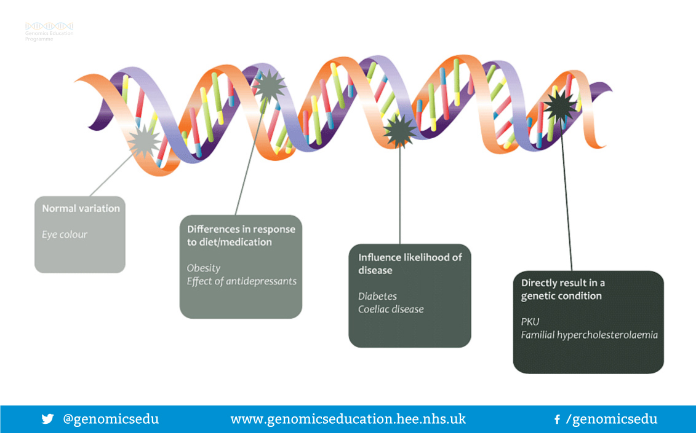
Genetic variant of ALDH2 makes us red face
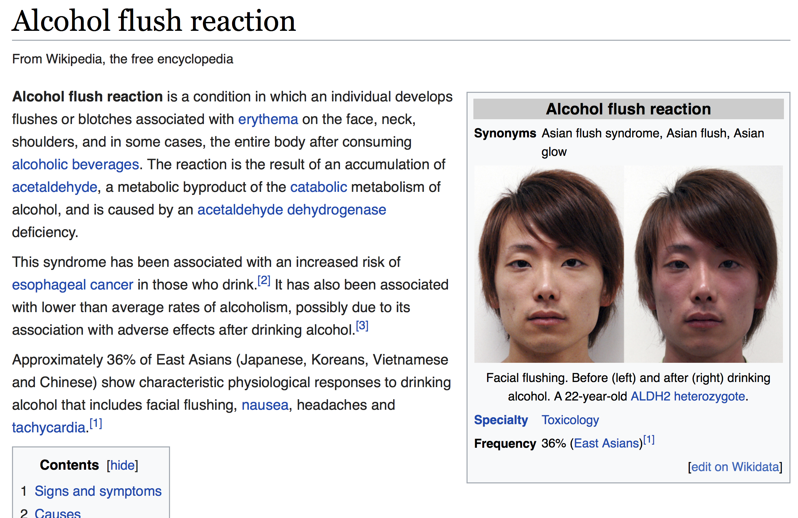
Some drugs works for parts of people
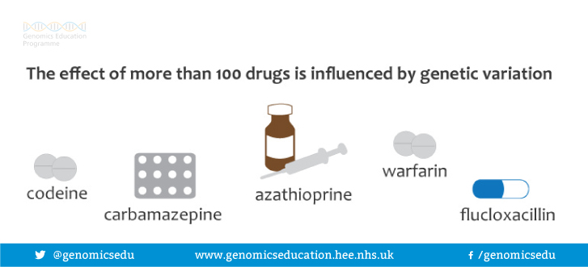
Milestone

Growth of sequencing data
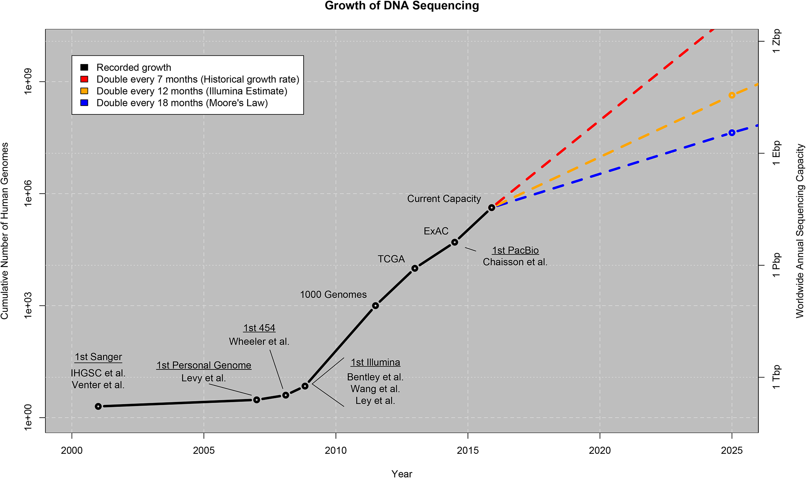
Data center?
To build or not to build, it’s a question.
Large bio-data sets should be stored in cloud services
Faster and cheaper

MSSNG Project (Autism)
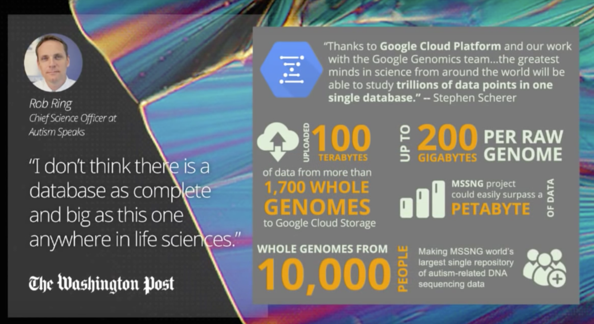
Million Veteran Project
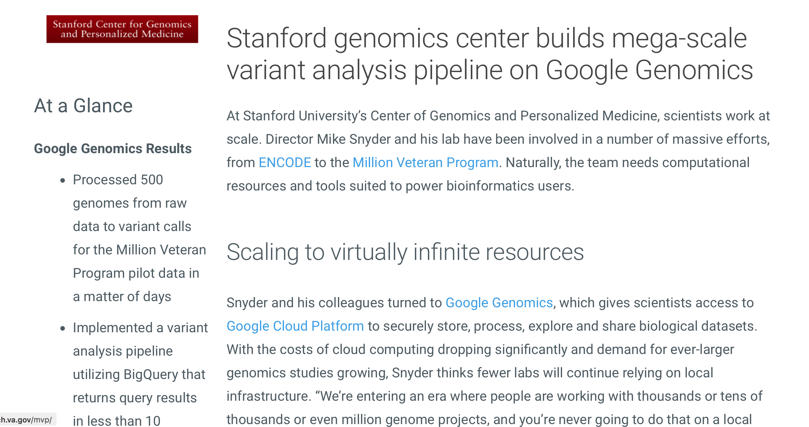
Cancer investigation
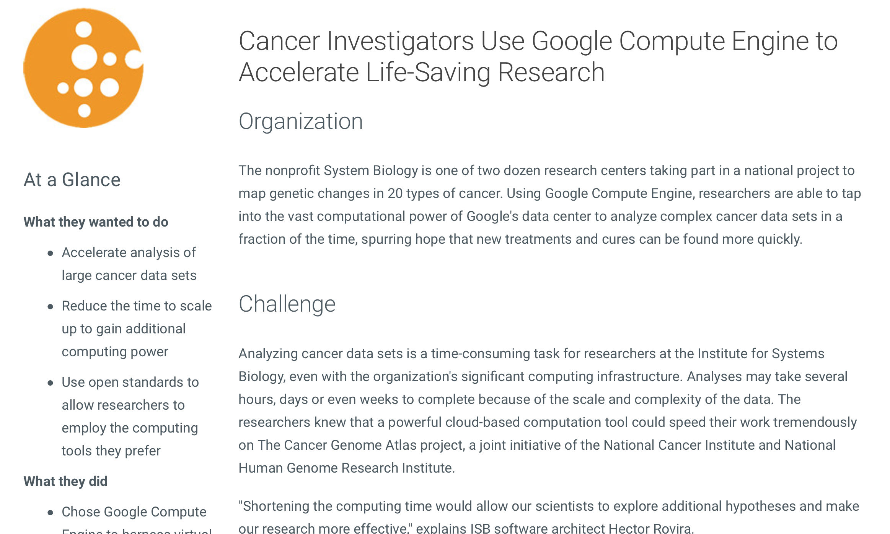
How Google Genomics works
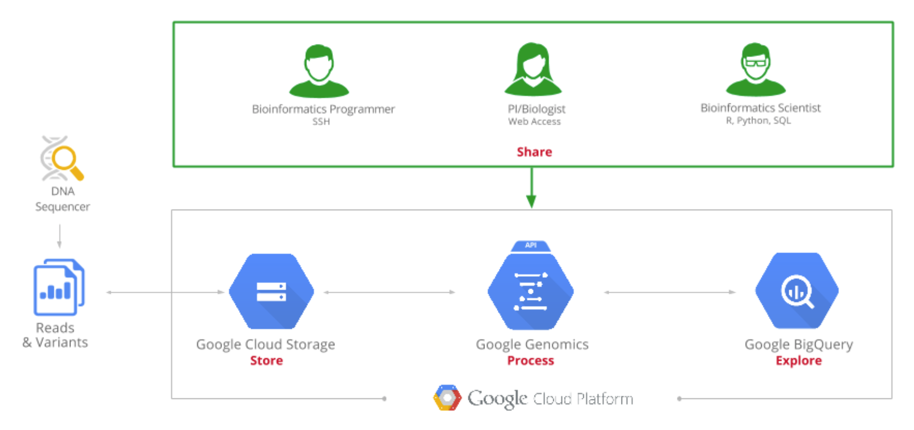
How to use Googe Genomics API?
Basic usage - Requirement
- BigQuery
- Genomics API
- Cloud Storage
Create dataset (to get dataset-id)
gcloud alpha genomics datasets create --name my-dataset
Create variantsets (to get variantset-id)
gcloud alpha genomics variantsets create --dataset-id dataset_id --name variantset_name
Import variants
gcloud alpha genomics variants import --variantset-id variantset_id --source-uris gs://your_bucket/
Check operation details
gcloud alpha genomics operations describe operations/a_specific_operation_id
Search a variant set (Genome DB) for variants at a specific location

Search callsets for individuals with calls (including reference calls) at the same location

萬里之行，始於足下
要拿到Genetic variants也得從raw reads開始
Whole genome sequencing data analysis workflow
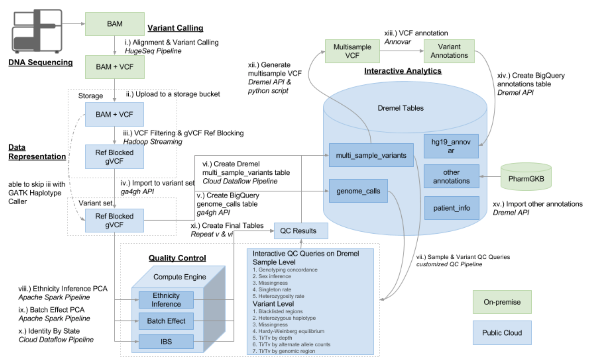 DOI: 10.1101/035295
Workflow Languages
- CWL (Common Workflow Language)
- WDL (Workflow Description Language)
- Others (Makefile, Snakemake, Nextflow and so on)
- Discussion on reddit
What is the next? Speed up genomic medicine with AI?
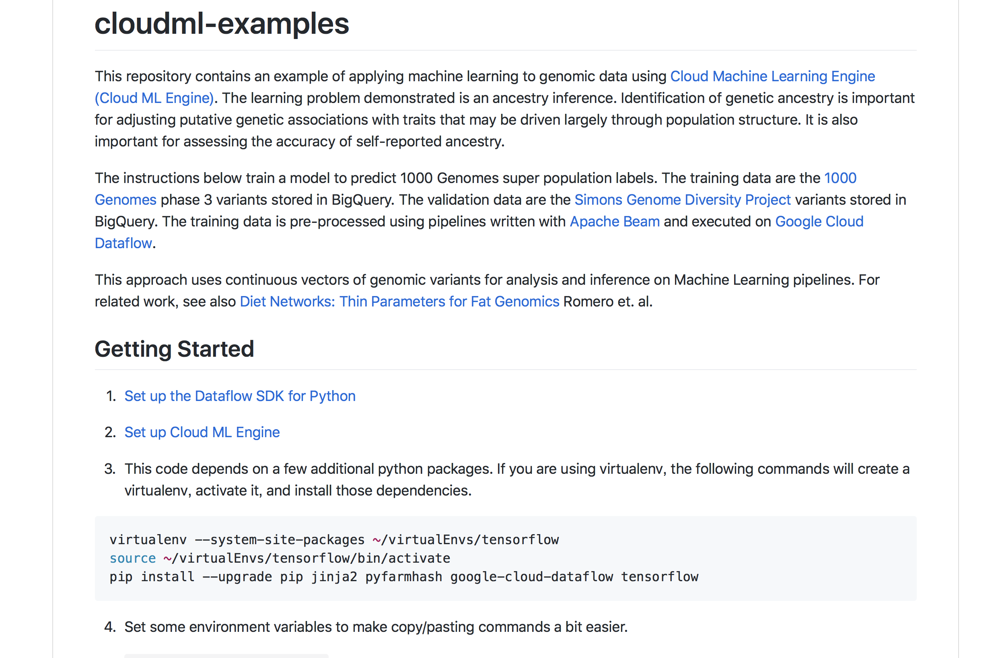